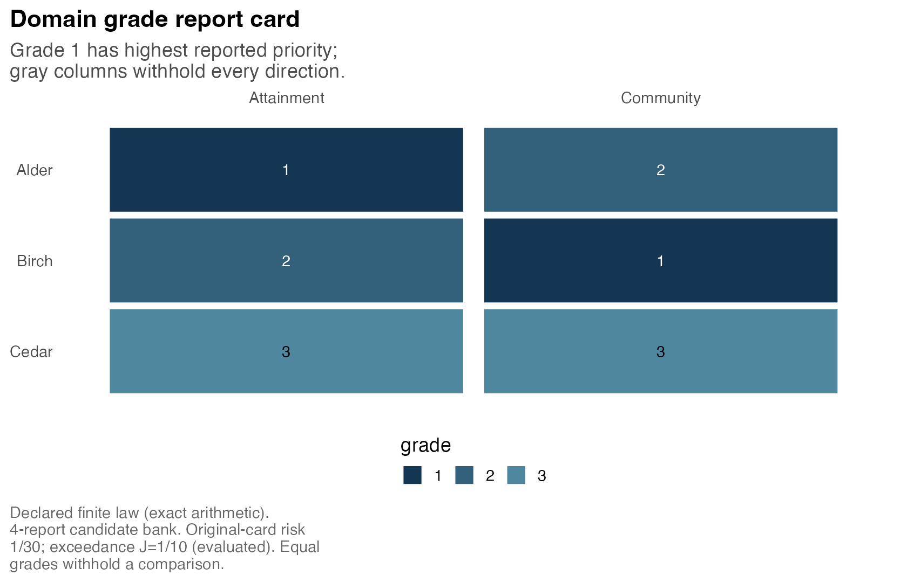
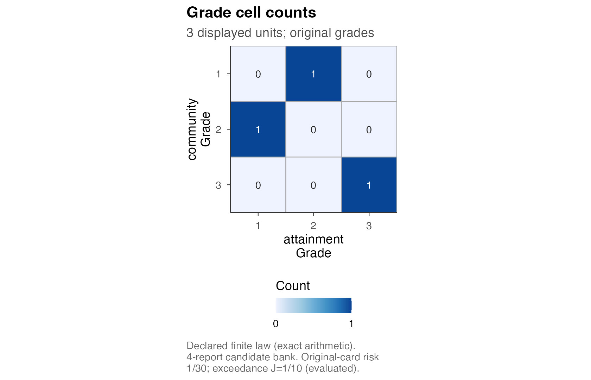

A multidomain report gives each unit a grade in each domain. A unit can have higher reported priority in one domain and lower priority in another. Grade 1 is highest; equal grades withhold the pair’s direction in that domain. The input supplies posterior information: postrank does not fit the underlying model.
This article builds a small fictional law, evaluates a proposed card,
searches a declared set of alternatives, and displays three views. All
data are defined below, so the example runs offline and needs no
optimizer backend. The suggested package gmp supplies the
exact arithmetic used by the multidomain interface. Install it with
install.packages("gmp") if needed.
The eight functions have separate jobs:
| Function | Job |
|---|---|
postrank_mdomain_input() |
Bind identified states to targets and provenance. |
postrank_mdomain_decision() |
Specify loss weights, withholding cost and protection. |
postrank_mdomain_evaluate() |
Evaluate a fixed named grade matrix. |
postrank_mdomain_grades() |
Extract verified grades from a card or fit. |
postrank_mdomain_family() |
Declare the candidate columns to consider. |
postrank_mdomain_solve() |
Search their complete Cartesian product. |
postrank_mdomain_assess() |
Assess a fixed card under an explicit finite, iid or MCMC route. |
postrank_plot_mdomain() |
Display grades, profile cells or a selected pair. |
Supply identified joint states
The array dimensions are state by unit by domain. A state contains all units and domains together; its dependence is part of the supplied law. The two slices below exhaust a specified finite law, with probability 9/10 on the usual state and 1/10 on a reversal. They are complete support, rather than a two-draw approximation to another posterior.
unit_ids <- c("Alder", "Birch", "Cedar")
domain_ids <- c("attainment", "community")
states <- array(NA_real_, c(2L, 3L, 2L),
dimnames = list(c("usual", "reversal"), unit_ids, domain_ids))
states["usual", , "attainment"] <- c(3, 2, 1)
states["usual", , "community"] <- c(2, 3, 1)
states["reversal", , "attainment"] <- c(2, 3, 1)
states["reversal", , "community"] <- c(3, 2, 1)Every target is already oriented so that larger means higher
priority. equality_classes declares model identities.
Distinct labels say that the model imposes no structural identity
between distinct units; they do not rule out equality in an individual
posterior state. Here there are no such equalities either.
targets <- setNames(lapply(domain_ids, function(d) list(
definition = paste("Fictional", d, "priority coordinate"),
units = "illustrative score", orientation = "larger_is_higher",
transformations = list(),
equality_classes = setNames(unit_ids, unit_ids),
equality_provenance = "The model imposes no identity between distinct units."
)), domain_ids)
provenance <- list(
input_id = "three-unit-support", law_id = "fictional-two-state-law",
proper_law = TRUE, producer = "Self-contained teaching example",
conditioning_info = "No observations: this is a specified probability law.",
joint_generation = paste("Each labeled slice is one complete state",
"of all units and domains."),
sampling_assumptions = list(finite_support_origin = paste(
"These two states exhaust the specified fictional law;",
"they are not sampled draws.")))
input <- postrank_mdomain_input(states, targets = targets,
provenance = provenance, representation = "exact_finite_law",
masses = c("9/10", "1/10"))
input
#> Multidomain posterior input
#> 3 units; 2 domains; joint_array
#> Representation: exact_finite_law
#> Coupling: supplied_joint
#> Proper law: producer declaration; numerical guarantee: noneThe constructor checks these declarations for consistency. It does not verify that a producer’s law is scientifically valid or properly sampled. Keep the array’s unit and domain order when supplying target lists, named policy vectors and grades. Matching state labels in separately generated domain histories do not establish a joint law.
Choose a decision and evaluate a card
The decision uses equal domain weights and a withholding cost of 1/5.
There are no expected-error guards (q = NULL). Joint
protection requires the probability of any protected
domain’s strict error-proportion exceedance to be at most
alpha = 1/5. With t = 0, one false disclosed
direction triggers that domain’s event.
decision <- postrank_mdomain_decision(
weights = c(attainment = "1/2", community = "1/2"),
tau = "1/5", q = NULL, t = "0", alpha = "1/5")
G <- cbind(attainment = c(1, 2, 3), community = c(2, 1, 3))
rownames(G) <- unit_ids
card <- postrank_mdomain_evaluate(input, G, decision)
card
#> Fixed multidomain report evaluation
#> 3 units; 2 domains; mode: joint
#> Risk: 1/30; joint probability: 1/10
#> Joint guards: evaluated; feasible_for_represented_measure
#> Basis: declared_finite_law; exact_represented_measure_arithmetic
#> Intended posterior feasibility certificate: none
postrank_mdomain_grades(card)
#> attainment community
#> Alder 1 2
#> Birch 2 1
#> Cedar 3 3Alder’s profile is (1, 2), and Birch’s is (2, 1): the directions
cross. There is no single overall ordering implied by these two
profiles. The card has expected loss 1/30 and joint-event
probability 1/10, so it meets the specified cap under this
declared finite law. The reversal causes errors in both domains at once;
the union counts that state once.
card$domain_table[, c("domain_id", "N", "EF_exact", "loss_exact")]
#> domain_id N EF_exact loss_exact
#> 1 attainment 3 1/10 1/30
#> 2 community 3 1/10 1/30
card$event_table[, c("domain_id", "N", "cutoff_exact", "p_exact")]
#> domain_id N cutoff_exact p_exact
#> 1 attainment 3 1 1/10
#> 2 community 3 1 1/10
card$feasible_for_represented_measure
#> [1] TRUEM = choose(3, 2) = 3 is the original number of unordered
pairs. Each domain’s loss divides expected false directions plus
tau times withheld pairs by this original M.
By contrast, the protected error proportion uses N, the
number of directions disclosed in its scope. Its strict
event is F/N > t, with first triggering count
floor(t*N) + 1.
Equal grades withhold direction; they do not claim equal targets. A
strict direction asserted when targets are equal is false. Model
identities declared in equality_classes must remain tied in
every supplied card, including domains with zero loss weight.
For an all-withheld card, N = 0. Its ratio is undefined
(eFDP = NA), while the no-disclosure convention
eFDP_zero is zero and the exceedance event is analytically
false. This differs from observing zero events in a finite sample.
withheld <- postrank_mdomain_evaluate(input, G * 0 + 1, decision)
withheld$scope_table[, c("domain_id", "N", "eFDP", "eFDP_zero")]
#> domain_id N eFDP eFDP_zero
#> 1 attainment 0 NA 0
#> 2 community 0 NA 0
withheld$status$joint
#> [1] "analytic_zero"Use strings such as "1/10" or "0.1" when
the policy is that exact rational number. An R numeric value such as
0.1 retains its stored binary value. The two
representations can differ at a strict policy boundary. Grade labels
have a different role: they encode order and ties and are canonicalized
to consecutive occupied integers. Labels 10, 20, 30 produce the same
card as 1, 2, 3.
Search a declared set of candidate columns
Give each domain a bank of permitted grade vectors in original unit order. Here each bank contains its proposed column; the constructor always adds the all-withheld column. Two choices per domain give four candidate cards.
family <- postrank_mdomain_family(input, columns = list(
attainment = list(setNames(G[, "attainment"], unit_ids)),
community = list(setNames(G[, "community"], unit_ids))),
max_actions = 4L)
fit <- postrank_mdomain_solve(input, family, decision, max_actions = 4L)
fit
#> Multidomain candidate-family fit
#> 4 declared actions examined; 1 optimizer (unique)
#> Risk: 1/30; joint probability: 1/10
#> Scope: complete declared candidate product; unrestricted optimality not established
#> Search: candidate_restricted_exact_optimum_for_represented_measure
#> Intended posterior feasibility certificate: none
fit$candidate_table[, c("risk_exact", "J_exact",
"feasible_for_represented_measure", "optimal", "selected")]
#> risk_exact J_exact feasible_for_represented_measure optimal selected
#> 1 1/5 0 TRUE FALSE FALSE
#> 2 7/60 1/10 TRUE FALSE FALSE
#> 3 7/60 1/10 TRUE FALSE FALSE
#> 4 1/30 1/10 TRUE TRUE TRUE
postrank_mdomain_grades(fit)
#> attainment community
#> Alder 1 2
#> Birch 2 1
#> Cedar 3 3The crossing card is the unique minimum-loss feasible candidate among
these four. This is candidate-restricted optimality: no
claim is made about unlisted ordered partitions. The search retains
every exact optimizer and selects the first in canonical lexicographic
grade order when there is a tie. max_actions refuses an
oversized product before enumeration; it never truncates the search.
For a larger ordered bank, supply domain-specific unit-ID
permutations through order and permitted cut positions
through cuts. Neither is guessed. The explicit choice
order = "posterior_mean" records that the same supplied
states informed the ordering. Such construction records do not provide
independent validation.
Read three views of the same card
The grade view shows each unit’s profile. Labels can change for display without changing the IDs used for evaluation.
postrank_plot_mdomain(fit, view = "grades",
domain_labels = c(attainment = "Attainment", community = "Community"))
The cell view locates occupied grade combinations. Empty combinations remain visible; cells do not impose an overall ordering of the profiles.
postrank_plot_mdomain(fit, view = "cells")
The pair view states the crossing directions for Alder and Birch. Filtering a view changes the display; captioned risk and protection continue to refer to the original card and its full declared scope.
postrank_plot_mdomain(fit, view = "pair", units = c("Alder", "Birch"))Use draws and choose the assessment route
For actual joint iid draws, keep each whole state together and use unique draw IDs. This small independent simulation samples complete states from the teaching law; the new input describes the empirical measure of 20 draws rather than its known source probabilities.
set.seed(120)
draw_rows <- sample.int(2L, 20L, replace = TRUE, prob = c(.9, .1))
joint_draws <- states[draw_rows, , , drop = FALSE]
dimnames(joint_draws)[[1L]] <- paste0("draw-", seq_len(20L))
draw_provenance <- provenance
draw_provenance$input_id <- "three-unit-iid-draws"
draw_provenance$joint_generation <- "Independent draws of complete two-domain states."
draw_provenance$sampling_assumptions <- list(
iid_mechanism = "Independent categorical draws from the two-state law.",
target_assertion = "Each complete draw targets fictional-two-state-law.")
draw_input <- postrank_mdomain_input(joint_draws, targets = targets,
provenance = draw_provenance, representation = "iid_equal_weight_draws")
draw_card <- postrank_mdomain_evaluate(draw_input, G, decision)
draw_card$assurance$numerical_basis
#> [1] "supplied_empirical_measure"
draw_card$assurance$intended_posterior_feasibility_certified
#> [1] FALSEExact arithmetic on draw counts does not certify feasibility for the
intended posterior. For iid assurance, freeze the card, decision, target
law, sample size and numerical budget before collecting
independent validation states, then use
postrank_mdomain_assess(method = "iid") with the documented
design record. Reusing exploration states does not establish that
design.
For MCMC draws, use
representation = "mcmc_equal_weight_draws" and provide
state_origin with original source_index,
chain_id and iteration_id in supplied state
order. Assess them with method = "mcmc" for empirical
diagnostics. Zero observed hits and chain diagnostics do not establish
iid assurance or convergence.
Our complete finite law instead uses the explicit finite-law route:
assessed <- postrank_mdomain_assess(input, fit, method = "exact")
assessed
#> Fixed multidomain report assessment
#> Method: exact; status: evaluated_declared_finite_law
#> Risk: 1/30; joint probability: 1/10
#> Joint certificate: yes; scope: specified declared-finite-law joint event only
#> Sampling assumptions verified: no; model calibration certified: no
assessed$certificate_scope
#> [1] "specified declared-finite-law joint event only"This route computes the specified joint-event probability under the declared finite law. It does not establish model calibration, mean guards or report optimality. See Multidomain decisions for the dependence examples and assessment details.
Repair two common input errors
Errors from this interface inherit
postrank_mdomain_error and carry code and
field. Catching that class lets an application explain the
repair without parsing an error message.
incomplete <- provenance
incomplete$joint_generation <- NULL
missing_joint <- tryCatch(
postrank_mdomain_input(states, targets = targets, provenance = incomplete,
representation = "exact_finite_law", masses = c("9/10", "1/10")),
postrank_mdomain_error = identity)
c(code = missing_joint$code, field = missing_joint$field)
#> code field
#> "mdomain_input_invalid" "provenance.joint_generation"Restore the producer’s actual joint_generation
explanation and rebuild the input, as in the first constructor call. If
the domain histories were generated separately, supply a domain-named
list and the appropriate within_domain_joint declaration.
Do not claim joint generation solely because their row counts or labels
match.
reordered <- G[c("Birch", "Alder", "Cedar"), , drop = FALSE]
bad_ids <- tryCatch(postrank_mdomain_evaluate(input, reordered, decision),
postrank_mdomain_error = identity)
c(code = bad_ids$code, field = bad_ids$field)
#> code field
#> "mdomain_action_identity" "grades"
# Reorder the values by verified IDs; changing labels alone would misidentify them.
repaired <- reordered[input$unit_ids, input$domain_ids, drop = FALSE]
postrank_mdomain_grades(postrank_mdomain_evaluate(input, repaired, decision))
#> attainment community
#> Alder 1 2
#> Birch 2 1
#> Cedar 3 3Both dimensions must match the original input order. Preserve the
names when subsetting (drop = FALSE), and rebuild the input
if the source states or scientific declarations change.